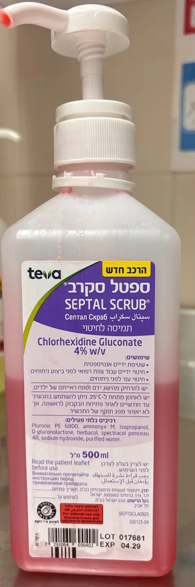
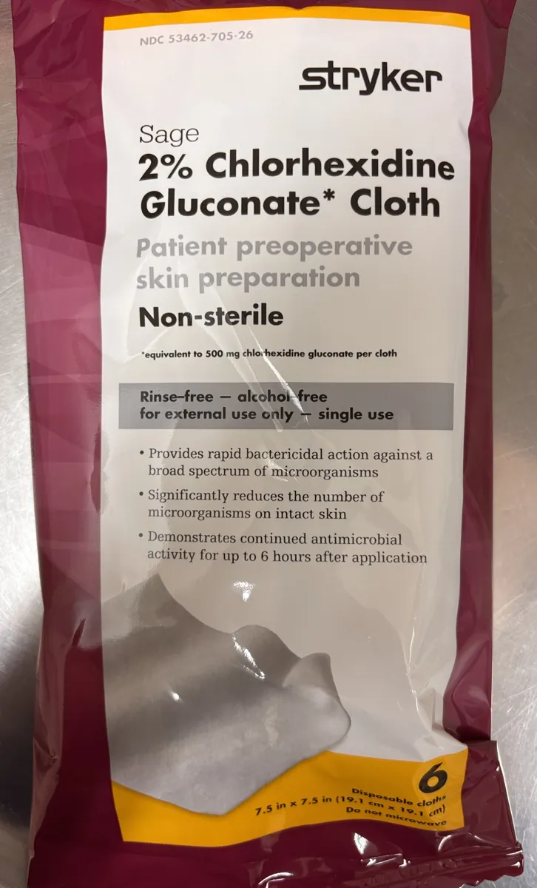
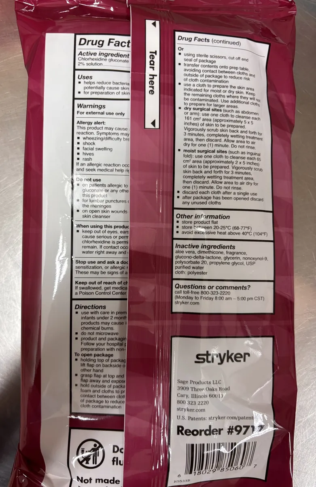

Как мог бы выглядеть блок с фотографиями внутри раздела «Душ и кожа перед операцией». Подписи — только названия с упаковки; текст инструкции сюда не добавлен и требует медицинской проверки.
Так выглядят средства, которые вам могут выдать



ЧЕРНОВИК. Перед использованием — медицинская проверка текста, подписей и уместности фото.
הדמיה של רכיב תמונות בתוך החלק «מקלחת והכנת העור». הכיתובים הם רק השמות מהאריזה; טקסט ההוראות לא נוסף ודורש בדיקה רפואית.
כך נראים התכשירים שעשויים לתת לכם
טיוטה. לפני שימוש — בדיקה רפואית של הטקסט, הכיתובים והתאמת התמונות.
نموذج لقسم صور داخل فقرة «الاستحمام وتحضير الجلد». التعليقات هي الأسماء من العبوة فقط؛ لم يُضف نص التعليمات ويحتاج إلى مراجعة طبية.
هكذا تبدو المستحضرات التي قد تُعطى لكم
مسودة. قبل الاستخدام — مراجعة طبية للنص والتعليقات ومدى ملاءمة الصور.